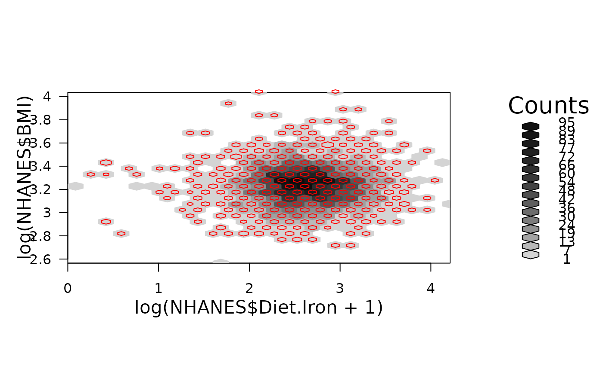

hexTapply.RdA wrapper for tapply except that it operates with each hexagon bin being the category. The function operates on the data associated on the points from each bin.
hexTapply(hbin, dat, FUN = sum, ..., simplify=TRUE)a object of class "hexbin", typically produced by
hexbin(*).
A vector of data the same length as hbin@cID
the function to be applied. In the case of functions like
+, %*%, etc., the function name must be quoted. If
FUN is NULL, tapply returns a vector which can be used
to subscript the multi-way array tapply normally produces.
optional arguments to FUN.
If FALSE, tapply always returns an array
of mode "list". If TRUE (the default), then if
FUN always returns a scalar, tapply returns an array
with the mode of the scalar.
This function is a wrapper for tapply, except that the cell id is always the categorical variable. This function is specifically good for adding variables to the cAtt slot of a hexbin object or for plotting a third variable in a hexagon plot. See below for examples.
Returns a vector of the result of 'FUN' as in
data(NHANES)
hbin<-hexbin(log(NHANES$Diet.Iron+1),log(NHANES$BMI),xbins=25,IDs=TRUE)
hvp<-plot(hbin)
mtrans<-hexTapply(hbin,NHANES$Transferin,median,na.rm=TRUE)
pushHexport(hvp$plot.vp)
grid.hexagons(hbin,style='lattice',pen=0,border='red',use.count=FALSE,
cell.at=mtrans)
